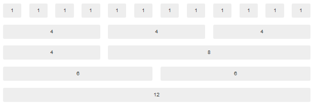
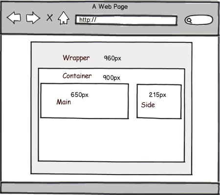
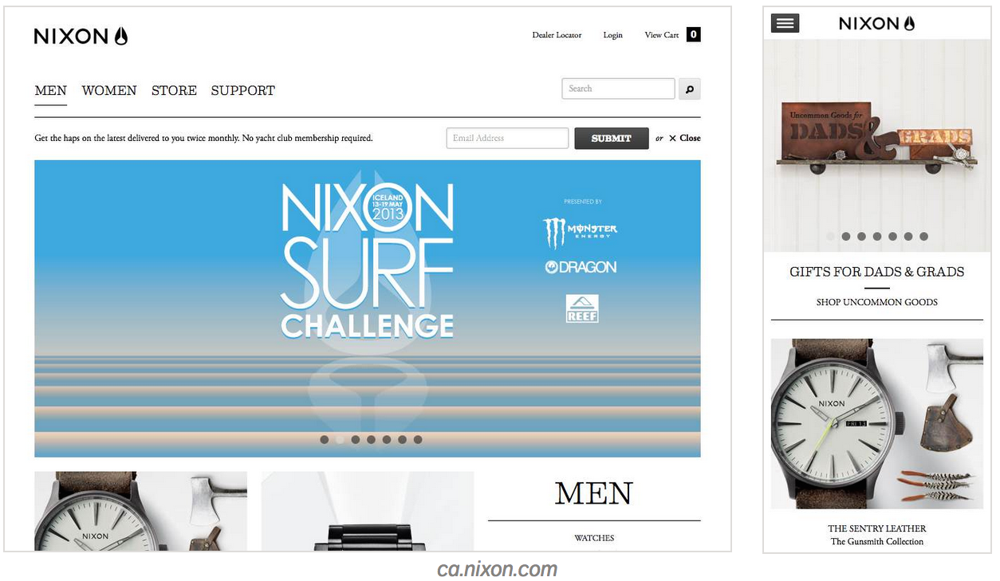
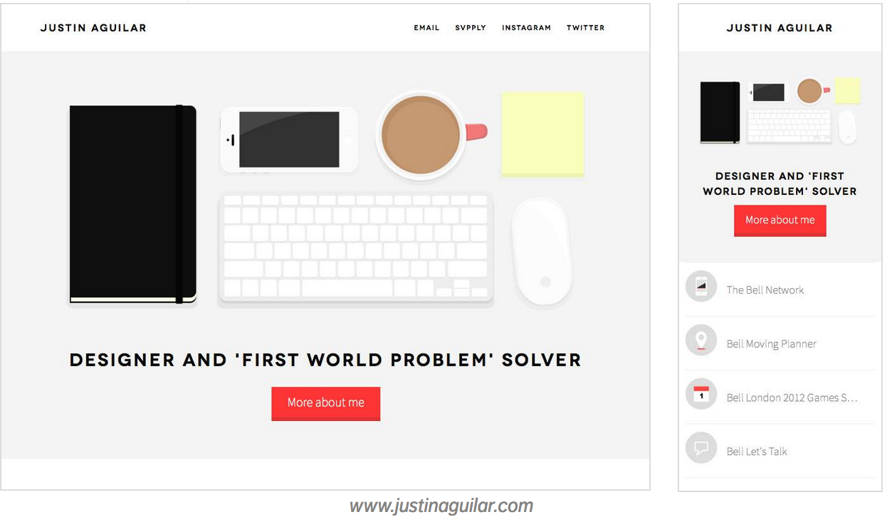
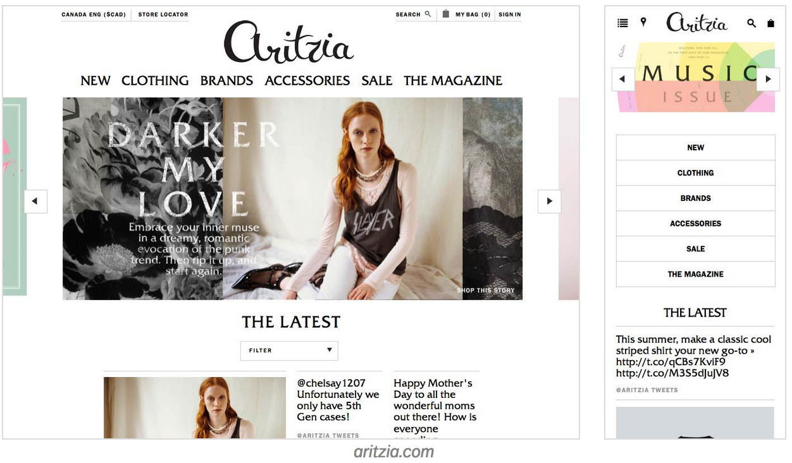
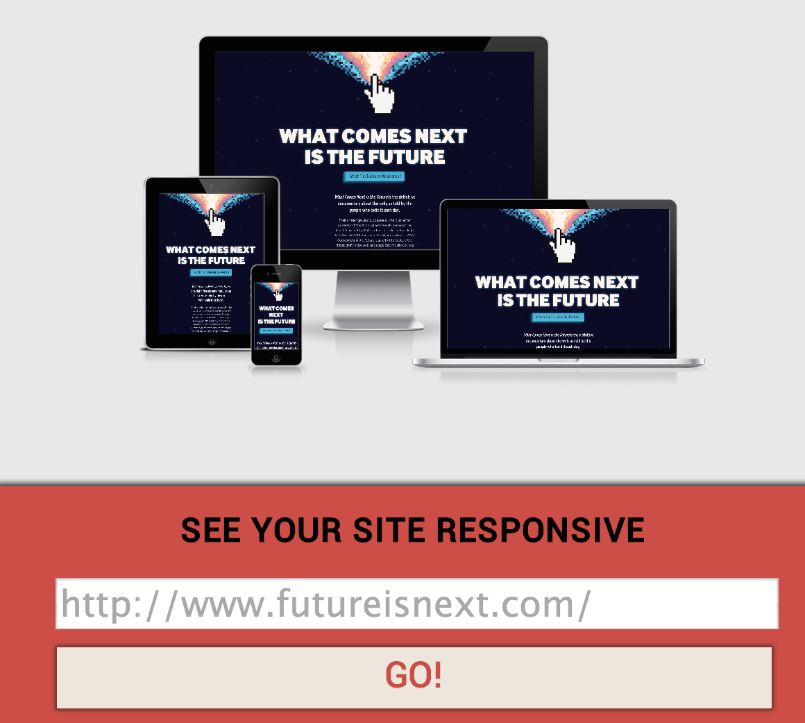
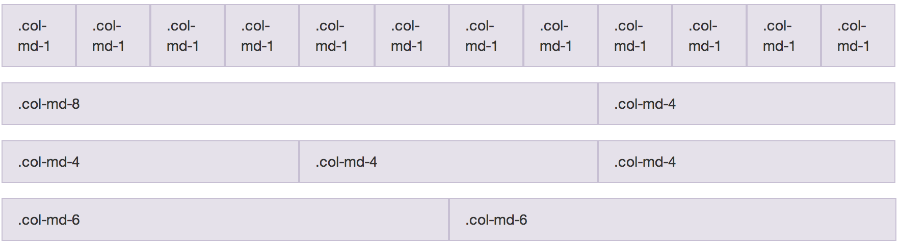
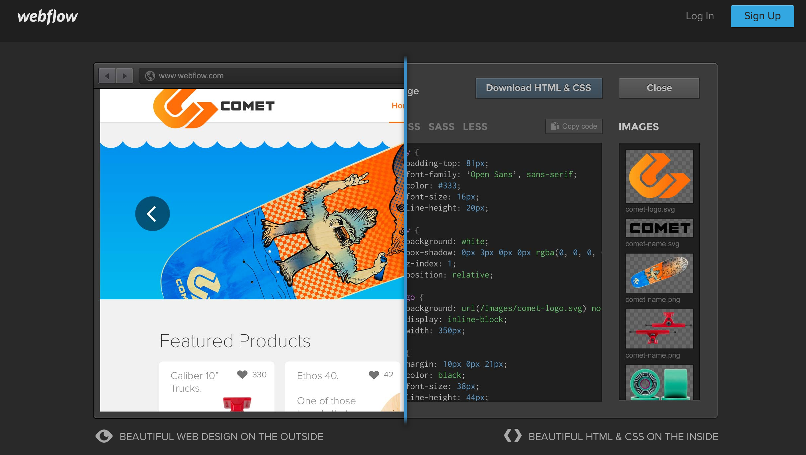

Intro to Responsive Web Design
Overview
- What is responsive design?
- Key Ideas
- Fluid Grids
- Media Queries
- Examples of Responsive Website Designs
- See it in Action
- When should you use it?
- Cons
- Why should you use it?
- Pros
- Implementing Responsive Design
- Mobile First
- Boostrap
- Other Options
- Resources to learn more.
- Exercise
- Key Ideas
- Fluid Grids
- Media Queries
- Examples of Responsive Website Designs
- See it in Action
- Cons
- Pros
- Mobile First
- Boostrap
- Other Options
What is Responsive Design?
A collection of techniques and ideas that aim to provide optimal viewing and navigational experience across a wide range of devices from desktops, mobile devices and tablets. A responsive website is adjusted to be useable on all devices and responds to the user’s behavior, screen size, and screen orientation.
In other words,
Responsive websites respond and adjust to their environment.
Key Ideas: Fluid Grids
A fluid grid is a carefully designed layout based on proportions where all elements of the layout automatically resize their widths in relation to one another.
Issues with fluid grids:
The design can break when a browser gets too narrow. For instance, a layout with three-columns won't work out as well on a mobile device. When this occurs, use media queries.
Fluid Grids
Magic Formula: ( target / context ) x 100 = result %
In order to have fluid grids, you need to convert fixed pixel widths to percentages using the magic formula.
ex: a container of 900px inside a content width of 960px would convert to 93.75%
( 900 / 960 ) x 100 = 93.75%
Key Ideas: Media Queries
Media queries apply certain CSS styles depending on a site visitor's information.
@media only screen and (min-width: 480px) {
/* Small screens (default) */
html { font-size: 100%; }
/* Medium screens (640px) */
@media (min-width: 40rem) {
html { font-size: 112%; }
}
/* Large screens (1024px) */
@media (min-width: 64rem) {
html { font-size: 120%; }
}
Here the font size changes at certain breakpoints.
Examples
Examples
Examples
See it in Action
One way to tell if a site is responsive is to slowly minimize a browser window. If the page is adjusting appropriately without triggering vertical scrollbars, then it is responsive (some sites have a limit).
Another way to check is to view a page on a desktop and pull it up on a mobile device or tablet. If the layout is adjusted and fits perfectly onto the screen, then it is responsive.
You can also check by copying and pasting your site's URL onto the site Am I Responsive
It will show how your site looks on different devices.
See it in Action
Example of a responsive site: Starbucks
Example of a non-responsive site: Apple
Not every site needs to be responsive. Apple's site isn't responsive, but they have an app for that. It all depends on personal preference, organization stategies, etc.
When Should You Use Responsive Design?
Although having a responsive site is not necessary for everything (i.e. personal blogs and projects), it's always good practice to use responsive design when you want to attract more visitors to your site.
When Should You Use it?
One reason: For business.
If you currently run a business that depend on the company's site for sales, it will help attract customers. If your site isn't responsive, visitors may bounce off your site and onto another competitor's site if their site is easier to use.
Cons:
- Since responsive websites are merely an application of alternate stylesheets, it still has to load all of its HTML markup and javascript content. This means that download times on a mobile network could take longer than the download times on a desktop.
- If you end up paying for a responsive site, it can get expensive.
- Not all tablet browsers support CSS3 that is used for media queries.
Why Should You Use Responsive Web Design?
Pros:
- Nowadays, the focus has shifted to mobility. More people are using mobile and tablet devices
- Optimal User Experience
- It is also easier to manage. You would only need to one set of content instead of multiple ones for different site versions
- One website and one URL is easier to share and link
- One website, one SEO campaign
Implementing Responsive Design
Since mobile usage is increasing, it is a good idea to prioritize the support of mobile context as far as user experience goes.
The concept "Mobile First" allows you to focus and prioritize on the necessary elements.

Implementing Responsive Design
- Use fluid grids by using percentages. Use the magic formula to convert pixel widths to percentages.
- Set break points using Media Queries.
Implementing Responsive Design
Another way to incorporate responsive design onto a web page is to utilize a framework called Twitter Bootstrap
They also have basic templates that are responsive ready.
- Download Bootstrap from their site
- Reference the CSS and JS
Inside the HTML document
Without Bootstrap:
<!DOCTYPE html>
<html>
<head>
<meta charset="utf-8">
<title>No Boostrap in this project</title>
</head>
<body>
<p> Not Responsive :( </p>
</body>
</html>
With Bootstrap:
<html>
<head>
<meta charset="utf-8">
<title>With Bootstrap</title>
<link rel="stylesheet" href="css/bootstrap.min.css">
</head>
<body>
<p>Hello Bootstrap!</p>
<script src="//ajax.googleapis.com/ajax/libs/jquery/1/jquery.min.js">
</script>
<script src="js/bootstrap.min.js"></script>
</body>
</html>
Bootstrap
Use bootstrap predefined grid classes such as "col-md-4" for creating page layouts in your HTML document
 ex:
<div class="row">
<div class="col-md-4">I am a grid</div>
<div class="col-md-4">I am another grid</div>
<div class="col-md-4">I am also another grid</div>
</div>
Other Options
If you don't have any programming experience or would just like another option, there are plenty of sites that will help you out.
Webflow is one option. It allows you to create responsive websites by just dragging and dropping building blocks within a browser.
Other options:
Resources to Learn More
Exercise
Convert a fixed width layout to a responsive layout.
Exercise folder -> open style.css and follow instructions